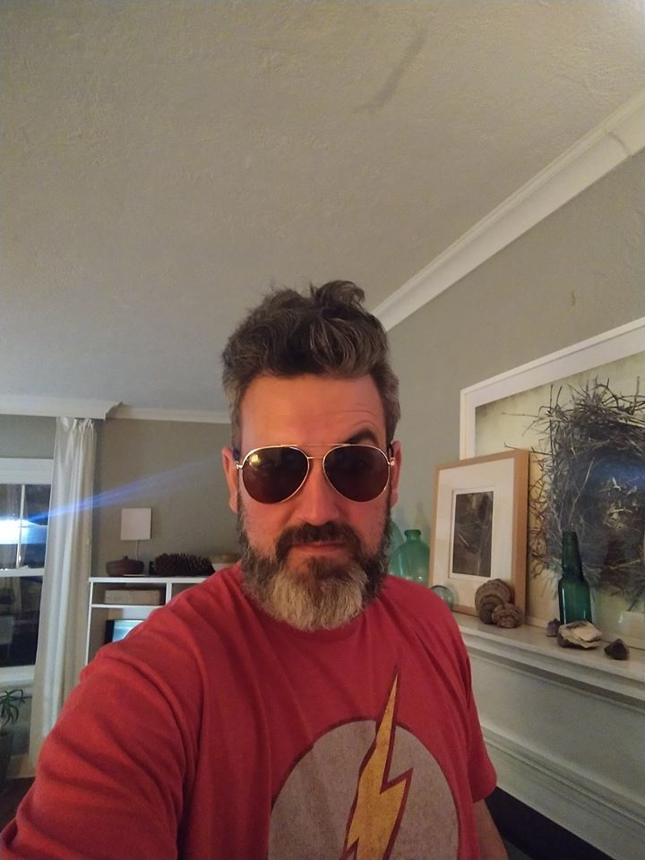

John Brosius Job Experience
Skills:
- Management: Ten years managerial experience in the retail, banking, and insurance industries. Excellent verbal and written negotiation skills.
- Sales: Eight years’ experience in business ownership and retail sales
- Education: Eight years of business/technology classroom teaching and student classroom and knowledge system management
- Personnel: Sixteen years of hiring, trained, and evaluating employees
- Service: Customer service, training, and data tracking. Inventory and audit control
- Computer: Eight years of teaching business technology experience with R, SQL, HTML, Java, Microsoft Office, CSS, C++, C#, Python, GitHub, AWS, and Git Profile
Experience:
Davenport School District, Davenport, IA August 2013- Present
- Experience with R, SQL, HTML, Java, Microsoft Office, CSS, C++, C#, Python, GitHub, and PLTW Computer Science
- Teach a computer science capstone through Iowa University STEM Innovator
- Scott Community College Adjunct professor since August 2013
- Presented at PLTW Summit Conference on STEM Project Based Learning
- Created Problem Based Curriculum for INSPIRE Capstone course at Davenport West
- Provides advice to coworkers and administration on needed resources, and monitors/leads project progress to accomplish work in a timely and cost-effective matter
- Implements pilot projects develop maintain and web portals for knowledge management and dissemination to fellow educators and administrators
- Participate in and implement change management processes to assist administrators toward a knowledge-centric culture
- Develop and maintain policies and procedures for campus and share best-business practices with colleagues and administration
John Deere Teacher Externship, Davenport IA June 2018 – August 2018
- Teacher Externship at John Deere ADV Lab
- Learned about design process from Engineers and how they use data to affect their decisions
- Designed Graphical User Interface to help engineers at Deere to save time for pulling data from machines in the field to help make decisions
First Robotics Championship Coach, Davenport IA December 2016 - Present
- Leads team #6317 Disruptive Innovation to Rookie All-Star World Champion in our Division, 2019 Chairman Award winner Seven River Wisconsin
- Leads hardware/software team to understanding sensors, and software correlation
- Possesses excellent management, and communication skills to lead team to focus on goals during the season
- Understands how to develop a team in stressful situations and leads
Cyber Security/Programming Coach, Davenport IA December 2017 - Present
- Helps build and coach teams for the Cyber Patriot competition through the Air Force.
- Led One team won the Gold Division for the state of Iowa, the other team won the Silver division.
- Coach’s all girl’s cyber security team. They were second in the state out of 92 teams. The team was honored by Governor Reynolds at a cyber security meeting. And the school was awarded $1000 dollars from SANS.
- Coached teams that got first and second at the Iowa University Hawk-Eye Challenge in 2018, coached another team that received second place in the same competition in 2019
- Expert knowledge of state-of-the-art technology, particularly advances in management systems
US Bank, Lincoln, NE January 2008–March 2010
- Co-Manager of a location with 7 bank employees
- Trained and coached in-store bankers and traditional bankers
- Tracked and monitored employee sales
- Enforced federal banking regulations
- Managed $12 million in loans for the branch
- Controlled checking accounts as well as charged off accounts